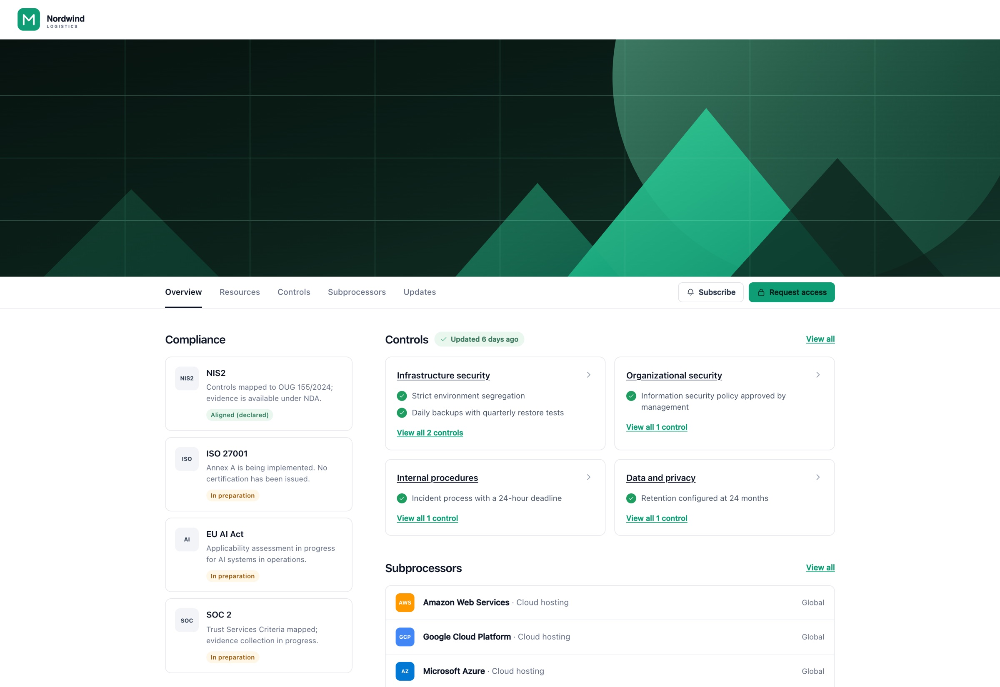
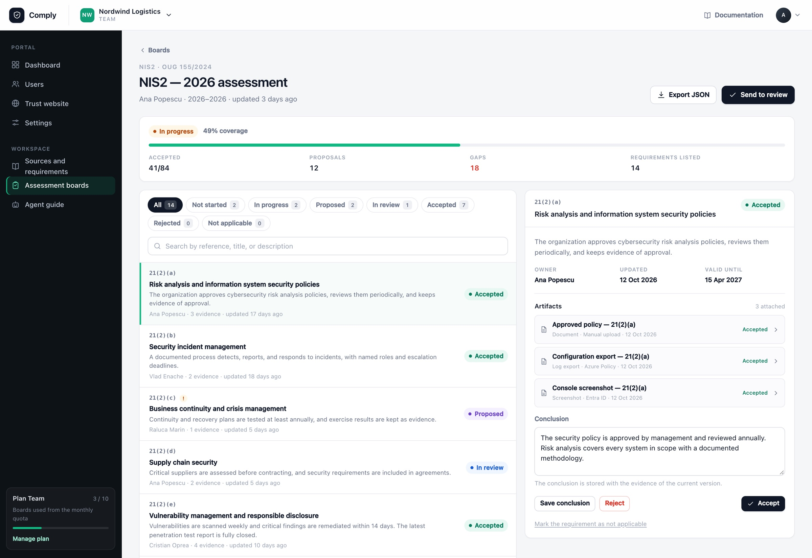
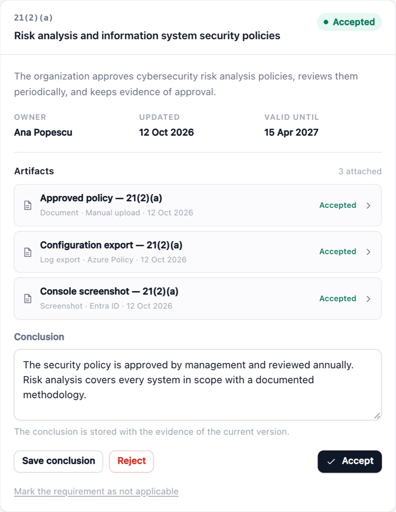
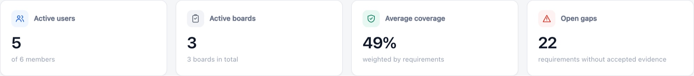

Requirements
1,569 records across NIS2, ISO/IEC 27001 Annex A, SOC 2, and the EU AI Act, with references that point back to the source.
Comply is a self-hosted workspace for NIS2, ISO/IEC 27001, SOC 2, and EU AI Act evidence. Each requirement keeps its reference, owner, evidence, and conclusion.

A requirement, its evidence, and the decision stay in one record. The library is managed; your conclusions are yours.
1,569 records across NIS2, ISO/IEC 27001 Annex A, SOC 2, and the EU AI Act, with references that point back to the source.
Files, links, and screenshots attach to the requirement they support. Review status and history stay on the record.
Connect any MCP client with a tenant-bound key. The agent asks in the user's language and writes the canonical answer in English.



Run one container on a server you control. The installer writes the Compose project, pulls the image, and waits for the health check.
curl -fsSLO https://raw.githubusercontent.com/AdrianTuci1/comply/main/easy-install.py
python3 easy-install.py deploy --sitename=comply.example.comThe installer stops at a health check. Open the URL and create the first account. For an agent-assisted install, use the setup prompt on the support page.
One board per framework, or one control set mapped across several. The library is read-only; the conclusions are yours.
| Framework | Official source | Records |
|---|---|---|
| NIS2 | Directive (EU) 2022/2555 | 409 |
| ISO/IEC 27001 | ISO/IEC 27001:2022, Annex A | 93 |
| SOC 2 | AICPA Trust Services Criteria | 61 |
| EU AI Act | Regulation (EU) 2024/1689 | 1,006 |
ISO/IEC 27001 covers Annex A controls. SOC 2 is a 61-criterion starter set based on the AICPA Trust Services Criteria. Licensed standards are summarized; verify them against the copy you own.